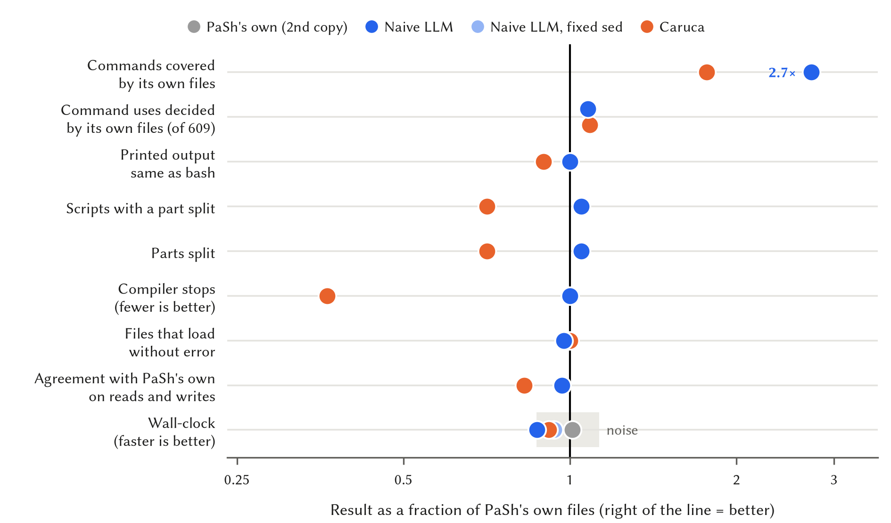
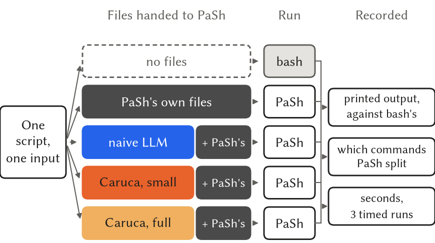
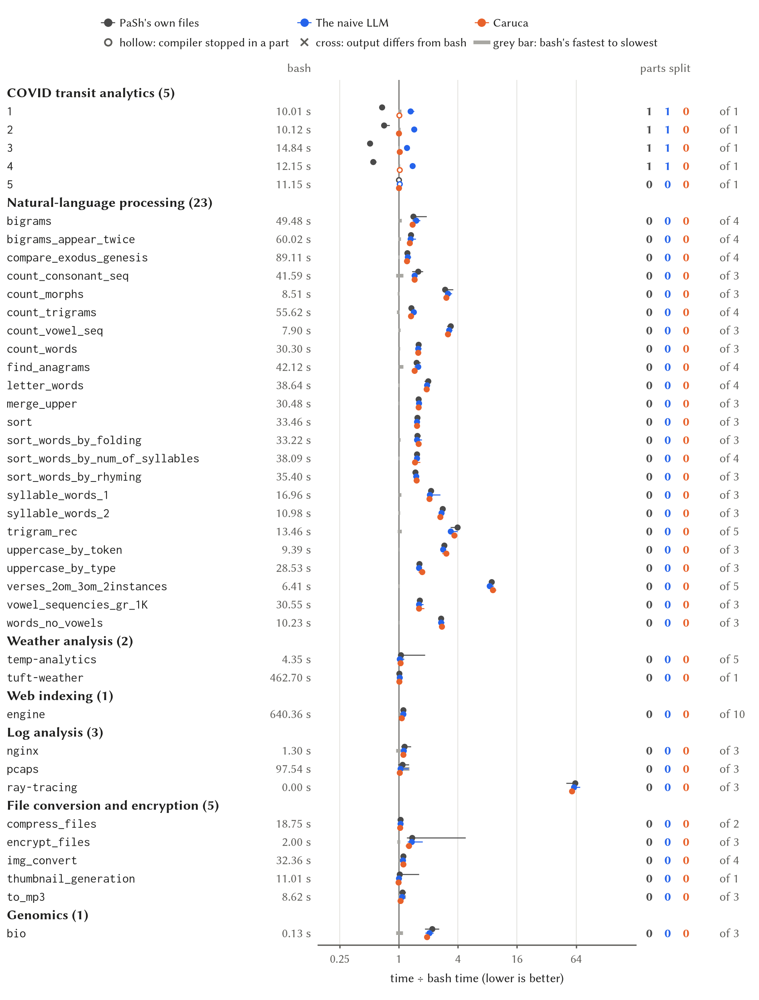

Draft 2.4, 27 November 2026. 86 scripts, three timed runs each.
The question. Given only the goal, the file formats and four examples, how do the annotation files a naive LLM writes fare against Caruca's, a carefully engineered pipeline, when PaSh runs its own benchmark suite? PaSh's own hand-written files are the reference for both.
What we saw. With the naive LLM's files PaSh's output matched bash in all 86 scripts, as with PaSh's own; with Caruca's files, as Caruca's paper ran them for PaSh, it was wrong in 9 of 86 (section 2). PaSh split a part in 43 of 86 scripts with the naive LLM's files, 41 with PaSh's own and 29 with Caruca's (Figure 2). It took 1.15 times as long with the naive LLM's files as with PaSh's own, and 1.09 times with Caruca's. That gap comes from tiny scripts that bash finishes in a fraction of a second, where every split costs more than it saves and the naive LLM's files split more; on the scripts that do real work in one pass the two are within 4 % of each other with PaSh's start-up removed (section 5). Table 1 has every measure; Caruca with its full grammars, in A.8, gives much the same picture.
Table 1: What PaSh did with each source's files on the 86 scripts (terms: How it was run). PaSh's own files are the reference: ▲ marks a result better than theirs, ▼ worse, in the source's colour; ↑ or ↓ in the row label says which way is better.
PaSh's own files
The naive LLM
Caruca
Output same as bash, of 86 scripts ↑
86
86
77▼
Parts split, of 177 ↑
41
43▲gained 2, lost 0
29▼gained 0, lost 12
Scripts with a part split, of 86 ↑
41
43▲
29▼
Parts where PaSh's compiler stopped, of 177 ↓
4
42 same, 2 others
11▼1 same, 10 others
Time ÷ time with PaSh's own files ↓
1.00
1.15▼
1.09▼
Time ÷ bash time, PaSh's start-up removed, all 72 scripts over 0.05 s ↓
0.97
1.26▼
1.05▼
Behind the result
Commands with the source's own files ↑
30
82▲
53▲
Commands whose files failed to load ↓
0
2▼wc, join
0
Same reads and writes as PaSh's own files, of 178 command lines
the reference
172
147
Same split decision as PaSh's own files, of 113 command lines
the reference
99
79
Reading
the reference; its own files stop the compiler in 4 parts
always right; splits most; 15 % slower, almost all on tiny scripts
wrong in 9 of 86 scripts; splits least, mostly for lack of sort options, which also makes it faster on tiny scripts; 9 % slower
Caruca as its paper ran it for PaSh: files traced under its hand-written grammars for PaSh's scripts, for 53 commands. With its full grammars where traceable: A.8.
Which scripts and why: section 2; four outputs side by side: A.7. Koala's stored answer (46 scripts) matched in 46, 46 and 37.
Gained: split with this source and not with PaSh's own files; lost: the reverse. Why parts were not split: Table A.2; by command: Table A.4.
Without cat: 41, 43 and 27 of 86. By command: Figure 2; per script: Figure A.9.
The same in every run. Which parts and why: Table 4.
Geometric mean over the 86 scripts of each script's median of three runs. Why: section 5.
0.11 s per script and 6 ms per part compiled taken off; below 1 is faster than bash. Scripts doing real work in one pass: Table 5.
PaSh's own files fill in for every command a source has no file for (A.3); command uses by command: Table 3.
Caruca: none after one repair of our converter (A.3). The naive LLM's wc: Table 3.
Distinct command lines where both the source and PaSh's own package have files; counting rule: Table 6.
The second sed file (52 scripts it covers): output 52 of 52, 14 of 52 scripts split (gained 0, lost 0), 3 compiler stops, time 1.07 × PaSh's own (Table A.4).
How it was run. We ran the 86 scripts of Koala, the PaSh team's current benchmark suite, on its smallest inputs, in nine groups: Classics 12, Unix50 34, natural language 23, COVID transit 5, file conversion 5, log analysis 3, weather 2, web indexing 1, genomics 1 (A.2; every file in A.5). Each script ran under plain bash and under PaSh with each source of annotation files, the files PaSh reads to decide which commands it may run in parallel (setup: A.3). A part is a piece of a script that PaSh compiles, such as a pipeline. A command is split when PaSh runs several copies of it on pieces of its input, and whole when it runs one. The naive LLM is Claude Code, an off-the-shelf coding agent. Caruca derives its files by running each command many times under a grammar, a list of the command's options, and watching what it reads and writes. Both of Caruca's grammar sets are written by hand:1 a full set, the reference its paper scores its LLM against, and a set trimmed by hand to the options PaSh's scripts use (54 commands; 64 options against 923 for the 42 commands in both). Caruca's code loads the trimmed set when it runs for PaSh, so that is what Caruca means here; its paper describes one grammar per command written by an LLM and does not mention the trimmed set. So the comparison is files a naive LLM wrote from the goal, the formats and four examples, against files Caruca derived under hand-written grammars. The full set, where traceable, is in A.8. The second sed file is the naive LLM's sed file after one fix. Each run recorded the printed output, which commands were split, and the seconds taken. More terms: A.1.
1binpash/caruca: full grammars in caruca/src/caruca/syntax_specs/ (120 commands), the trimmed set for PaSh in caruca/src/caruca/pash_syntax_specs/ (54).
The naive LLM against Caruca

Figure 1: How the naive LLM fared, metric by metric. Each dot is one source's result as a fraction of PaSh's own files' result (the line at 1.0); right of the line is better on every row, so "compiler stops" and "wall-clock" are plotted inverted. The shaded band on the wall-clock row shows typical run-to-run noise; Figure 3 gives the full spread. The light blue dot is the naive LLM with its second sed file, on the 52 scripts that file covers; the grey dot is an identical second copy of PaSh's own files. Values: Table 1.
How it fared. On correctness the naive LLM's files were never wrong: in all 86 scripts PaSh printed what bash prints. Caruca's files, covering 53 commands, let PaSh print wrong output in 9 of 86 scripts. Each time a Caruca file allowed a split that changes the result; section 2 lists them (Table 2) and A.7 shows four outputs beside bash's. On one line both sources allow a split: tr -d '\n'. The naive LLM's file allows only splits into consecutive pieces, and says why: round robin regroups by line, which is unsafe when newlines are deleted. That careful judgment kept its output right.
On splitting, PaSh split a part in 43 of 86 scripts with the naive LLM's files, in 41 of 86 with PaSh's own and in 29 of 86 with Caruca's, because Caruca's grammars for PaSh lack sort's -r and -n and so lose whole parts (section 4). The naive LLM's own weaknesses are two files that fail to load (wc, join; Table 3), two extra compiler stops (Table 4), and one misread sed (section 4); none changed an output.
On time, both ran PaSh slower than its own files, because at these small inputs a split mostly adds work: the naive LLM's files took 1.15 times as long as PaSh's own, Caruca's 1.09 times. Splitting a plain cat costs both: in the 25 scripts where it is the only difference, the naive LLM's files took 1.21 times as long as PaSh's own; in the 13 such scripts for Caruca, Caruca's took 1.14 times as long. The naive LLM's extra time against Caruca comes almost entirely from the 34 Unix50 scripts, which bash runs in tenths of a second: there each split starts a splitter and eight copies for almost no work, and the naive LLM's files split more often. Caruca is sometimes faster because it fails to parallelize: in two Unix50 scripts its sort file stops PaSh's compiler, the part runs as plain bash, and that takes half of PaSh's own time. Where splitting pays, the two are close (0.88 and 0.85 of bash's time with start-up removed). Section 5 explains both effects.
Where Caruca's files give wrong output
Caruca's files let PaSh print wrong output in 9 of 86 scripts. Each wrong output was the same in all four runs, and an independent check confirmed all 9 (Table 2; the check is listed in Table A.7). In every case a file allowed a split that changes the result; nothing crashed. A.7 shows four wrong outputs line by line beside bash's. With full grammars where those could be traced, Caruca's files gave wrong output in 10 scripts, 8 of them the same as here (A.8).
Table 2: The 9 scripts where Caruca's files gave wrong output, and what each source's file decided on the same command line.
Scripts
Command line
Why the split is wrong
PaSh's own
Naive LLM
Caruca
Unix50: seven scripts
sed 1d to sed 5d
Deletes line n of the whole input; split, it deletes line n of every piece
no split
no split
split
Classics: spell
uniq
A repeated line that falls where two pieces meet survives
whole
whole
split
Unix50: one script
tr -d '\n', then cut -c 1-4
Joins all lines into one; split, each piece becomes its own line, and cut prints 4 letters per piece
whole
split, consecutive pieces only; output right
split
Pieces: PaSh cut the input into blocks of one megabyte here. "Whole": the file allows only a split PaSh has not implemented. On tr -d '\n' the naive LLM's file allows only splits into consecutive pieces, so PaSh rejoined them before cut; Caruca's also allows round robin, so PaSh ran tr and cut on each block. The scripts are listed in A.6; four outputs side by side in A.7.
Eight of the 9 follow from one rule in Caruca. When its test runs of a command disagree, Caruca keeps the most parallelizable label: sed was tested with one-letter scripts, where a no-op passed and a real edit failed; tr -d passed on one of three test inputs and failed on two. The uniq case is different: none of Caruca's test inputs had a repeated line at the split point, so every test agreed by chance.
Each source against PaSh's own files, command by command
PaSh's own package has files for 30 commands. The naive LLM has files for 20 of them and Caruca for 20, and the suite used 18 of those inside parts. That allows a direct test: the same command uses, decided once by PaSh's hand-written file and once by each source's (Table 3).
Table 3: The 18 commands every source has files for, over the command uses inside parts (484 of the 609). Split: uses PaSh ran as several copies. "No split": uses where the file allowed none.
Command
Uses
Split
File said "no split"
PaSh's own
Naive LLM
Caruca
PaSh's own
Naive LLM
Caruca
cat
94
0
43
29
0
0
0
tr
75
29
40
23
0
5
33
grep
74
29
30
22
7
7
11
sort
67
25
32
0
9
0
67
cut
58
36
39
20
0
0
6
sed
37
6
1
19
24
36
4
uniq
30
0
0
2
0
0
24
awk
14
0
7
0
0
5
14
head
10
0
0
0
0
7
7
wc
8
0
0
0
0
8
8
comm
5
0
0
0
0
5
5
tail
3
0
0
0
0
1
3
rm, mkfifo, diff, seq, xargs
8
0
0
0
0
8
8
col
1
1
0
1
0
1
0
All 18
484
126
192
116
The naive LLM's wc file raised an error when PaSh loaded it, so PaSh treated all 8 uses as "no split" (A.3).
A use is not split either because its file said no, or because PaSh did not run its part in parallel at all. Compiler stops on these commands: PaSh's own files 3 (awk once, tail twice), Caruca's 10 (sort). Commands that only one source has files for and that met a part: the naive LLM 5 (mkdir, join, fmt, rev, mogrify), Caruca 7 (echo, read, join, fmt, rev, ffmpeg, find); PaSh split none of them. The naive LLM's fmt file stops PaSh's compiler on fmt -w1. Full counts: Table A.7; Caruca with full grammars: A.8.
On these 18 commands the naive LLM's files let PaSh split 192 of 484 uses, PaSh's own 126 and Caruca's 116. Most of the naive LLM's extra is cat, which PaSh's own file deliberately leaves whole. Caruca's files never split sort and refuse tr -c, a split PaSh's own file allows; they also split sed and uniq where PaSh's own files do not, which is where the wrong output comes from.
Where the sources differ
Figure 2 counts, for each command, the scripts where a source split it and PaSh's own files did not, or the reverse. The naive LLM's two gained parts are parts where PaSh's own files make PaSh's compiler stop (Table 4).
Figure 2: For each command, the scripts in which PaSh split it with this source and not with PaSh's own files (solid, gained), or the reverse (hatched, lost). In grey under each command: the scripts where PaSh's own files had it split, of those that use it in a part. The second sed file ran on 52 scripts. A.6 gives the same counts with the command lines behind them. The commands shown are every command for which a source differed from PaSh's own files; all others came out the same under every source.
Why they differ
Each cause was checked against the commands and the records, including whether PaSh's own file is right.
Caruca, sed, uniq and tr -d: splits that change the output. These are the gains in Figure 2 for sed, uniq and tr. Section 2 explains each one (Table 2); A.7 shows the outputs.
Caruca, sort: a limit of the method. Caruca's files never split sort, so Caruca loses it in 17 scripts. Caruca allows only splits whose pieces are joined end to end. sort needs a merge, which PaSh's own file provides (Table 3, the sort row).
Caruca, tr -c: a refusal. Caruca's file says "no split" for tr with the complement option, in 33 of 75 uses. PaSh's own file splits it, which is safe: tr works one character at a time (Table 3, the tr row).
Caruca, the other commands: lost with their part. Caruca's grammar for PaSh lacks sort's -r and -n. Its file then stops PaSh's compiler in 10 parts and gives no answer in 2 more, so every command there runs whole (Table 4; reasons per part in Table A.2). The full grammars know these options (A.8).
The naive LLM, sed: a gap in what the agent was told. PaSh passes the sed script with its quotes still on, and the format description never said so. The agent's first file misreads it. The second sed file splits sed again in all five scripts where the first lost it (Table A.4, last row).
The naive LLM, col: a careful refusal. Its file says col cannot be split, which is right in general: a reverse line feed near a piece boundary changes the output (tested). In the spelling script the split is safe only because the sed before it removes those characters. The test is in the vetted causes (Table A.7).
The naive LLM and Caruca, cat: correct but not useful. Both let PaSh split a plain cat of one file. The output is the same, and the split only adds work. That is why PaSh's own file leaves cat whole; section 5 gives the cost.
When PaSh itself failed
PaSh's compiler stopped in 4 parts under its own files, 4 under the naive LLM's and 11 under Caruca's. Table 4 shows which parts and why. One stop, shared by every source, is a PaSh bug we reported. Every other stop has one cause: an annotation file took a word on the command line for an input file name, so PaSh believed the command would not read its pipe.
Table 4: The parts where PaSh's compiler stopped, by cause (✕: stopped with this source). One part per script, the same in every run.
sort -r/-n missing from Caruca's grammar, read as file names
Total
4
4
11
The naive LLM shares 2 of its 4 stops with PaSh's own files, avoids PaSh's own other 2 (its tail file is right) and adds 2 of its own (fmt -w1). Caruca shares only the PaSh bug; its other 10 come from the missing sort options. Every stop ran as plain bash, so no stop changed an output; Table A.3 gives PaSh's error text and Table A.5 the scripts.
Time
Why PaSh is slower than bash here. With its own files PaSh took 2.3 times as long as bash (geometric mean over the 86 scripts), and was slower than bash in 74 of 86; with the naive LLM's files 2.7 times, with Caruca's 2.5. Koala's small inputs make most scripts quick: 45 of 86 run in under a second under bash. PaSh pays a start-up and a compile for every part before any work is done, and the natural-language scripts run their parts inside a loop, so PaSh compiles them once per pass, thousands of times in some scripts. Splitting pays only when the work per piece outweighs that overhead: the Classics regular-expression script fell from 8.2 seconds under bash to 1.9, and the four COVID scripts that PaSh's own files split fell from 10 to 15 seconds to about 7. These times therefore say little about larger inputs (section 7).
Why the naive LLM's files are slower than PaSh's own (1.15). They split about as many parts as PaSh's own files, but they split cheap commands that PaSh's own files leave whole. A plain cat of one file is the main case: in the 25 scripts where it is the only difference, the naive LLM's files took 1.21 times as long as PaSh's own. In the four COVID scripts the first sed file left sed whole, so the pipeline ran through one copy and took about twice as long (13 to 18 seconds against about 7); the second sed file narrows the gap to 1.07 on its 52 scripts. Caruca's files pay the same start-up and compile with fewer extra splits (cat in 29 scripts against the naive LLM's 43), hence 1.09. Figure 3 shows each script against PaSh's own files; Figure A.9 shows each against bash.
Why Caruca's files are faster than the naive LLM's (1.09 against 1.15). The gap is small and comes from where splitting cannot pay. Script by script, the naive LLM's extra time against Caruca comes almost entirely from the 34 Unix50 scripts, which bash runs in 0.03 to 0.3 seconds; the four COVID scripts add about a quarter (its first sed file), and on the Classics one-liners Caruca is the slower of the two. On such tiny scripts any split costs more than it saves, so the source that splits less is faster: Caruca splits a part in 29 scripts against the naive LLM's 43, often because its sort file lacks -r and -n and stops PaSh's compiler, after which the part runs as plain bash (in Unix50 scripts 10 and 11 that took half of PaSh's own time). Where splitting does pay, in the scripts that do real work in one pass, the two are within 4 % of each other with PaSh's start-up removed (0.88 and 0.85 of bash's time; Table 5).
No large script gains from the naive LLM's extra splits. Of the 41 scripts that bash runs for at least a second, the naive LLM's files split differently from PaSh's own in only six, and none ran faster for it: in the four COVID scripts its extra awk and cat splits cannot make up for sed left whole (13 to 18 seconds against about 7), and in two Classics scripts an extra cat split adds nothing or costs a little. Where its time is lower than PaSh's own on other large scripts, the split decisions are identical, so the difference is run-to-run noise. Whether its extra splits pay on larger inputs was not tested (section 7). Its advantage in this run is correctness, not speed.
With PaSh's start-up removed. PaSh's own cost, measured on the 44 scripts where its own files split nothing, is about 0.11 seconds per script plus about 6 milliseconds per part it compiles; the loop scripts send it 3,000 to 9,000 parts, 20 to 52 seconds. Taking that off each run (Table 5), PaSh's own files about tie bash overall and run about 1.6 times faster than bash on the scripts that do real work in one pass. The cost of the split copies themselves is not taken off, so the naive LLM's extra splits of cheap commands such as cat are real process cost and stay. No script ran for hours: the longest, web search, took about 11 to 12 minutes, about 42 seconds of it start-up and compiling (7,003 parts).
Table 5: Time ÷ bash time, measured and with PaSh's start-up removed (geometric means; lower is better, below 1 is faster than bash).
Scripts
PaSh's own
Naive LLM
Caruca
All 72 scripts over 0.05 s, measured
1.65
1.95
1.76
The same 72, start-up removed
0.97
1.26
1.05
One-pass scripts (at most 3 parts, bash 1 s or more), start-up removed
0.63
0.88
0.85
Model fitted on the 44 scripts where PaSh's own files split nothing; how the two runs were pooled: A.3. Script and full table: Table A.7.
Figure 3: Each dot is one script: its time with this source divided by its time with PaSh's own files, both medians of three runs (lower is better). The black bar is the geometric mean. The shaded band is the range of an identical copy of PaSh's own files run twice (0.83 to 1.46, 172 paired runs), with an inner band for the middle 90 % (0.92 to 1.06).
Run twice, PaSh's own files ranged from 0.83 to 1.46 (8 of 172 runs strayed by more than 10 %); the 1.46 is one file-encryption script. Each source is compared against PaSh's own files run alongside it (A.3); per-script seconds are listed in the records (Table A.7).
Next to the Caruca paper
The paper compared Caruca's files with PaSh's hand-written ones by hand, on the suite's own command lines. Where PaSh's own split needs a special joining step, as sort's does, the paper counted a "no split" answer as agreement. Table 6 puts this run's checks beside it.
Table 6: The Caruca paper's PaSh check beside this run's. The paper counted commands; this run counts distinct command lines. Here output means printed output; the last two rows are new.
What was checked
The Caruca paper2022 suite
The naive LLMthis run
Carucathis run
Same reads and writes as PaSh's own files
52 of 52 commands
172 of 178 lines
147 of 178 lines
Same split decision
"no split" counted as agreement where PaSh needs a joining step
99 of 113 lines
79 of 113 lines7 of the others: PaSh's own split needs a merge step
Suite output the same with the files swapped in
yes, by hash; number of scripts not given
86 of 86 scripts
77 of 86 scripts
Parts PaSh split
not reported
43 of 177 parts
29 of 177 parts
Time (lower is better)
not reported
2.7 × bash time
2.5 × bash time
How lines are counted: only lines where the source has its own files (the naive LLM 215, Caruca 196). The first row keeps lines where PaSh's own file says what the command reads and writes (178 for both). The second keeps lines where it gives a split decision (113), which leaves out cat. The paper's 52 are the commands it had hand-written files for; here Caruca has files for 53, 25 of them used in a part. As in the paper's PaSh runs, Caruca's files here come from its hand-written grammars for PaSh (How it was run).
What this does not show (threats to validity)
Small inputs only. The times mostly show PaSh's start-up cost, and a split that was right here is not proved right on every input.
Written files are only partly checked. For the naive LLM's runs of scripts that write files, 211 of 576 timed runs matched bash's and 347 had no bash run in the same repeat to compare with; for Caruca's runs, 93 of 96 matched, and the 3 others are web-search's, whose files differ even between two bash runs.
The two sources did not start from the same place. The naive LLM wrote its files from the goal, the file formats and four examples. Caruca derived its files by tracing commands under grammars written by hand; Caruca's paper describes its grammars as written by an LLM from each command's manual and does not mention the reduced set for PaSh. If anything this favours Caruca. With its full hand-written grammars where traceable the result is much the same (A.8).
The naive LLM's files are its first run per command, and its runs differ. Caruca's files are one trace per command, and gzip is missing (A.3).
PaSh's own files are the yardstick, but they are not always right: for col the naive LLM's refusal is the safer answer.
Split with this source and not with PaSh's own files; or the reverse.
Command use.
One call of a command in a part.
Printed output, written files.
What the script prints, compared in every run; and the files it writes, compared only where bash's run of the same repeat was there to compare with.
Time ÷ bash time.
A script's time under PaSh divided by its time under plain bash; below 1 is faster than bash, and lower is better.
Geometric mean.
The average of ratios that treats "twice as fast" and "twice as slow" alike.
Noise band.
How far an identical second copy of PaSh's own files strayed in time: 0.83 to 1.46 across 172 paired runs (beyond 10 % in 8 of 172), with the 1.46 coming from one file-encryption script.
Session.
One batch of runs on the same machine: the first (24 to 25 November) with PaSh's own files and the naive LLM's; the second (26 to 27 November) with PaSh's own files and Caruca's files for all converted commands.
Koala (commit ccf25a57) is the PaSh team's current benchmark suite; its scripts are the 2022 suite's, kept up to date, with their inputs. Nine of its groups ran here, 86 scripts, at Koala's smallest input size. Table A.1 maps them to the 2022 paper's sets; two sets could not run here (A.3). A.5 lists every script file; orchestration/coverage.md gives each one's 2022 original.
Table A.1: The nine groups run, with the 2022 set each stands for.
Group (Koala folder)
Scripts
Stands for (2022 suite)
Classics (oneliners)
12
oneliners
Unix50 (unixfun)
34
unix50
Natural-language processing (nlp)
23
nlp
COVID transit analytics (covid)
5
analytics-mts
File conversion and encryption (file-mod)
5
dependency_untangling (file jobs)
Log analysis (analytics)
3
dependency_untangling (nginx, pcap)
Weather analysis (weather)
2
max-temp
Web indexing (web-search)
1
web-index
Genomics (bio)
1
dependency_untangling (genomics)
A.3 How the experiment was set up, for a reader new to PaSh
What PaSh does. PaSh takes an ordinary shell script and, without changing what it computes, runs parts of it in parallel. A command such as sort that reads a stream of lines can be given eight pieces of its input at once; eight copies run side by side and the results are joined. PaSh must know, for every command, whether that is safe and how to join the pieces. That knowledge lives in the annotation files; PaSh ships with its own, hand-written set. Where PaSh has no files for a command, or the files say "cannot be split", it runs that part as plain bash, quietly, and the output is then still correct. So a right answer on its own tells you nothing about what PaSh did.
What we compared. The annotation files already existed: PaSh's own; the naive LLM's, written weeks earlier for 79 commands, plus tr, xargs and awk, added on 24 November because most suite scripts use them (82 in all); and Caruca's, generated from its traces, once from each grammar. For each source we made a private copy of PaSh's annotation package with that source's files swapped in for the commands it has, and pointed PaSh at that copy for the run (Figure A.3). PaSh itself was not changed. Two more copies were run: the naive LLM's files with the second sed file, and an identical second copy of PaSh's own files, timed only, to measure how much times vary by chance.

Figure A.3: How each script was run: under plain bash, then under PaSh with all of one source's files at once and PaSh's own files for the commands that source has none for.
Caruca's files, in two steps. The first session had Caruca's files for 8 commands only, those converted on 10 November with Caruca's own converter. Since nearly every difference then came from that small reach, the remaining commands were converted on 26 November and the suite was run again (the second session). The small grammar converted for 53 commands; gzip failed, because its grammar file in Caruca's repository is named for gunzip. Full grammars were traced for the 22 commands where that is tractable; comm, join, cp and diff would need 2 to 271 million runs, and ls ran out of memory. Our converter had to be repaired once: it copied a traced example holding a tab into a comment, so three files did not compile, and one such file stops PaSh from starting at all. The repair escapes the example; the files were regenerated from the same traces. Details: caruca_conversion/README.md.
Which scripts. The 2022 PaSh paper evaluated PaSh on 12 sets of real scripts. Their original input data can no longer be downloaded, so we used Koala, the same group's current benchmark suite, which keeps updated versions of those scripts and their inputs. Ten of the twelve sets have a successor there; the genomics set's new scripts and the package-building set need downloads, memory or Intel-only tools this machine lacks.
How each script was run. Once under plain bash, which gives the reference output and time; then under PaSh with each source's files, with 8 workers (the machine has 8 cores): once with the stand-in programs below, and three times timed without them. Every run's printed output was compared byte for byte with bash's run of the same repeat, and, for the 46 one-liner and Unix50 scripts, with Koala's stored reference answer.
How we know what PaSh did. Three records per run: PaSh's own log, which says which parts it compiled and which it ran in parallel; the parallel script PaSh wrote, which shows how many copies of each command it started; and a small stand-in program placed ahead of every command, which notes each time the command starts. A command counts as split only when PaSh's script runs two or more copies of it and it started more often than under bash. Each source's files were also asked directly, outside PaSh, what they would answer for every command line, with the command's words passed exactly as PaSh passes them. In 849 of 850 uses inside parts PaSh ran in parallel (the four sources together), PaSh split the use exactly when the files allowed a split it can carry out; the exception is two awk uses in one part whose copies cannot be told apart.
Why the full run takes hours. The time is the scripts themselves running: a one-liner takes about a second, a natural-language script up to 3 minutes, web-search 10 to 12. In the first session each script ran seven ways (bash and six PaSh sets), in the second five (bash, PaSh's own files twice, Caruca's two sets), each timed three times.
Timing conditions and faults. Timed runs were made one at a time with nothing else running in the machine, a Linux virtual machine on a Mac. In the second session the Mac stayed on mains power and never slept. In the first it slept four times (lid closed); the runs it hit, two natural-language scripts and web-search's third repeat, were run again. Two faults in our own runner were found and handled in the counting, with the records left untouched. In the repeats, bash was rotated out of first place, so 482 runs that came before bash were recorded "not the same as bash"; all had bash's output, and they are compared with bash's run of the same repeat instead. And web-search's timed runs of the first repeat lacked the node program and stopped early; those 7 runs were redone and the broken ones left out. Pooling. Each source's time is divided by bash's and by PaSh's own files' time in its own session, and PaSh's own files are pooled over both sessions (geometric mean): time ÷ bash 1.69 and 1.62, start-up removed 1.03 and 0.92 (pooled 0.97), one-pass scripts 0.62 and 0.64 (pooled 0.63; 11 one-pass scripts in the first session, 10 in the second). The reasons parts were not split (Table A.2) are counted from the second session for Caruca; PaSh's own files gave the same counts in both.
Independent check. A separate reviewer, given the records and not the write-up, re-ran scripts with every source, hashed every annotation file against its origin, confirmed PaSh reads the folder it is given, read all 396 PaSh logs, and recomputed every number: 10 of 11 checks pass and no cell differs. The one failure was the runner's summary calling every output right where only printed output was checked; this report follows the reviewer. A second, separately written count gave the same headline numbers (A.10). The second session was also counted by two separately written scripts, with the same results, and in 639 of 639 uses inside parts run in parallel PaSh split exactly when the files allowed it.
Table A.2: The 177 distinct parts per source, by the reason PaSh did not split them; every part not split counts against the source. Caruca's 24 "said no split" parts are 23 single echo parts, which PaSh's own package has no file for, and one comm part. For the other sources: parts with the same reason under PaSh's own files, and parts with it only here.
Reason
PaSh's own files
The naive LLM
Caruca
same as PaSh's own
only here
same as PaSh's own
only here
No files for a command
95
61
0
64
0
A shell construct PaSh does not compile
27
27
1
26
3
PaSh's compiler stopped
4
2
2
1
10
The source's files said no split
0
0
1
0
24
The files say the command writes something other than a stream
0
0
31
0
0
The source has files, but they gave no answer
0
0
0
0
15
Nothing in the part can be split with these files
1
0
0
0
0
Other, not classified
9
9
0
5
0
Parts split
41
43
29
Each column adds up to 177. Counted per execution (a loop's part once per pass) the three "other" rows merge into one: PaSh's own 10; the naive LLM 9, and 31 only here; Caruca 9, and 11 only here. The other rows are unchanged.
The naive LLM's 31 parts that only it does not split. Each is a part holding a single command for which PaSh has no file of its own: mkdir in 30 scripts, mogrify in one. The naive LLM's file says the command writes something other than a stream, so PaSh logs "has outputs other than streaming" and runs it as plain bash. Under PaSh's own files the same parts count as "no files". The answer is correct and nothing splittable was lost; the counting script calls them "other, not classified", and PaSh's log names them.
Why PaSh's compiler stopped. Every stop is one of two errors in PaSh's log (Table A.3): a PaSh bug independent of the files, and an assertion with one cause in every source: an annotation file took a word on the command line for an input file name, so PaSh believed the command would not read its pipe. Only the mistaken word differs: an option's value (PaSh's own tail -n 1, the naive LLM's fmt -w1), a program text (awk), or an option missing from Caruca's grammar for PaSh (sort -r, -n, -rn). Of the naive LLM's three assertion stops, one (covid/5, the awk program) is shared with PaSh's own files; its own two are both fmt -w1 (Unix50 scripts 34 and 36; PaSh's log shows -w1 taken as a file name in both). Caruca's files stop on neither awk nor tail. PaSh ran every such part as plain bash, so the output stayed right; Table A.5 lists the scripts.
Table A.3: The two errors behind every compiler stop, read from PaSh's logs, and what in the annotation files triggers them. Counts are distinct parts, all repeats alike.
Error in PaSh's log
What it means
What triggers it
PaSh's own
Naive LLM
Caruca
NameError: name 'Arg' is not defined in create_reduce_tree
A PaSh bug: a name lost in its January 2026 code reorganisation, hit when PaSh builds the tree that joins split pieces; reported as issue 794
Nothing in the files; one part of oneliners/bi-grams under every source
1
1
1
AssertionError in pipe_append (assert not other_in is None)
PaSh pipes one command into the next, but the next command's file says it reads a named file, not standard input
A word taken for an input file: option value (tail -n 1; fmt -w1, naive LLM), program text (awk), option missing from the grammar (sort -r, -n, -rn)
Scripts are in Koala's checkout in the virtual machine, under ~/koala/. Marks: e edited, r rewritten, n new in Koala; unmarked scripts are the published 2022 script, except how the input is passed in. The 2022 original of each is in orchestration/coverage.md.
Table A.4: Commands where a source changed what PaSh split, in scripts (as in Figure 2). PaSh's own: scripts split, of those using the command in a part. Others: split here and not with PaSh's own (+), or the reverse (−). Last column: distinct command lines behind the counts.
Command
PaSh's own files
The naive LLM
Caruca
Command lines
cat
0 of 82
+43
+29
1
sort
17 of 44
+2
−17
7
cut
26 of 35
+2
−9
14
sed
6 of 24
−5
+7, −5
10
tr
20 of 49
+3
+2, −6
8
awk
0 of 11
+6
same
4
grep
21 of 47
+1
−4
4
uniq
0 of 30
same
+2
1
col
1 of 1
−1
same
1
Naive LLM, second sed file (52 scripts)
–
cat +14, awk +4, col −1; sed the same as PaSh's own
–
Every other command came out the same under every source. cat's line is one form, a plain cat of one file, over 22 file names. Where PaSh's own files filled in for a command, the result matched them in every use (Caruca: 1 use, bigrams_aux).
Wrong output (the crosses in Figure A.9). Caruca: oneliners/spell, unixfun/23, 26, 28 to 33 (with full grammars: A.8). The sed lines are 1d to 5d in unixfun/26 and 28 to 33.
Table A.5: Where PaSh's compiler stopped (the hollow dots in Figure A.9; one part each).
Scripts
Source
Error
oneliners/bi-grams
every source, and the second sed file
NameError
covid/5
PaSh's own files, the naive LLM, and the second sed file
Four wrong outputs: three of the 9 with Caruca's files as run here and one (top-n) with its full grammars (A.8), regenerated with the batch's runner and identical, by checksum, to what the batch recorded. + marks lines only in Caruca's output.
Unix50, script 23
… | grep "[A-Z]" | tr -d '\n' | cut -c 1-4
Caruca let tr -d '\n' and cut split.
PORT
+ T'PO
+ T'PO
+ RT'P
+ RT'P
+ ORT'
… 25 more added lines
bash prints 4 letters (5 bytes); Caruca's prints 31 lines of 4 letters (155 bytes), one per 1 MB block, because each block's tr and cut ran on their own.
7110 see
7080 go
+ 390 explain
+ 390 excellent
+ 390 everywhere
… 697 more added lines
bash prints the 100 most frequent words; Caruca's prints 800 lines, the first 100 of each of 8 pieces of the sorted list. The first two lines above are bash's lines 99 and 100.
Classics, spell
… | sort | uniq | comm -23 - dict
Caruca let uniq split.
amstetten
+ an
anatole
bacawollai
+ back
badlyall
… 25 more added words
bash prints 1,234 words not in the dictionary; Caruca's prints 1,261. A word that falls where two pieces meet leaves uniq twice; comm matches one copy with the dictionary and prints the other, so 27 dictionary words appear as misspellings.
One line either way, 3,044,246 bytes under bash and 3,044,195 under Caruca's files. bash deletes the 4th line of the whole stream; split, sed deletes the 4th line of every one of the 8 pieces, so 7 more short fields (51 bytes) are lost from the middle of the line.
The body's Caruca is Caruca as its paper ran it for PaSh: files traced under the hand-trimmed grammars ("small grammars"). Here, Caruca's files traced under its full hand-written grammars where tractable: 22 of the 53 commands, at up to 2 options per run (small grammars: up to 4), the small grammar for the other 31 (A.3).
Table A.6: Caruca with its small grammars (the body's Caruca) and with full grammars where traceable, on every row of Table 1.
Measure
PaSh's own
Caruca, small grammars
Caruca, full where traced
Output same as bash, of 86 scripts ↑
86
77
76
Parts split, of 177 ↑ (gained, lost against PaSh's own)
41
29 (0, 12)
40 (0, 1)
Scripts with a part split, of 86 ↑ (without cat)
41 (41)
29 (27)
40 (38)
Parts where PaSh's compiler stopped, of 177 ↓
4
11
3
Time ÷ time with PaSh's own files ↓
1.00
1.09
1.10
Time ÷ bash time, start-up removed, 72 scripts ↓
0.97
1.05
1.09
Commands with the source's own files
30
53
53 (22 full)
Commands whose files failed to load ↓
0
0
0
Same reads and writes as PaSh's own, of 178 lines
–
147
155
Same split decision as PaSh's own, of 113 lines
–
79
83
Wrong output, full grammars: oneliners/top-n (sed 100q, shown in A.7), unixfun/17 (uniq), 23, 26, 28 to 33; 8 shared with the small grammars, whose ninth is oneliners/spell. Each is right under the other set only because PaSh ran that part as plain bash there. Compiler stops, full grammars: oneliners/bi-grams (the PaSh bug) and unixfun/34, 36 (fmt -w1, as for the naive LLM).
The full grammars split more (40 of 86 scripts against 29) and stop PaSh's compiler less (3 parts against 11): the trimmed grammars lack options such as sort -r and -n. They do not fix correctness (10 of 86 scripts wrong against 9, 8 the same): the wrong outputs come from how Caruca merges test results and from its test inputs, not from which options it knows (section 2).
Figure A.9: One row per script; this page Classics and Unix50, the next page the other seven groups. Dots: median time with each source's files ÷ bash's median, log scale; thin line: fastest to slowest of the three runs; a cross where the printed output differed from bash's. Left: bash's median in seconds (0.00 is under 5 ms). Right: parts split under each source, in its colour, of the parts PaSh compiled. Each source's time is divided by bash's time from the same run (A.3).

Figure A.9, continued: the other seven groups. Two natural-language scripts and web-search were timed again after a Mac sleep (A.3).
A.10 Records
Supports: every number in the report, from Table 1 on.
Paths are relative to naive_llm_caruca/comparisons/2026-11-24_pash_suite_naive_vs_caruca/ in the repository, unless they start with ~ (the PaSh virtual machine).
Table A.7: The records and where each lives.
What
Where
The naive LLM against PaSh's own files, per command (Table 3)
per_command.md, per_command.json, written by per_command.py
Caruca's annotation files used here, written from its two grammars
The second session's records (Caruca's files for all converted commands)
full_run_caruca_all/: results.jsonl.gz, regions.jsonl.gz, occurrences.jsonl.gz, answers/, manifest.json (file hashes and the grammar used per command), README.md
Every second-session number
numbers_caruca_all.md, .json, written by count_report.py (records prepared by prep_full_records.py); the runner's own count full_run_caruca_all/numbers.md
Caruca against PaSh's own files, per command (Table 3)
full_run_caruca_all/per_command_caruca-main-all.md and -pash-all.md, written by per_command_caruca.py
The independent check of the wrong outputs (Table 2)
full_run_caruca_all/wrong_outputs_verified.md
PaSh's start-up and compile overhead, and time with it removed (Table 5, Table 1)
overhead_adjusted.md, written by overhead_adjusted.py
The four wrong outputs shown in A.7, re-generated, with their diffs against bash
Every command use whose result differs from PaSh's own
numbers_full.md, section "Appendix A4: every use whose result differs from PaSh's own"
Times per script and source, in seconds (median, fastest, slowest)
numbers_full.md, section "Appendix A5: times per script"
Figures 1, 2, 3, A.3 and A.9 (each checks itself against numbers_full.json and numbers_caruca_all.json); Figure 1
figures_interim/make_figures_interim.py with --caruca-records full_run_caruca_all; figures_interim/make_scorecard.py (values and sources in its comments); drawn into figures_full/